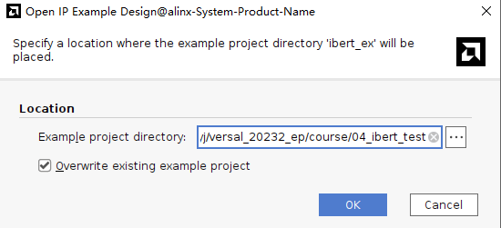
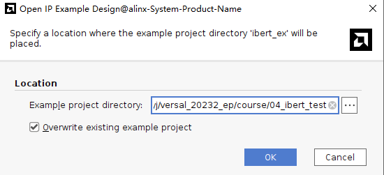
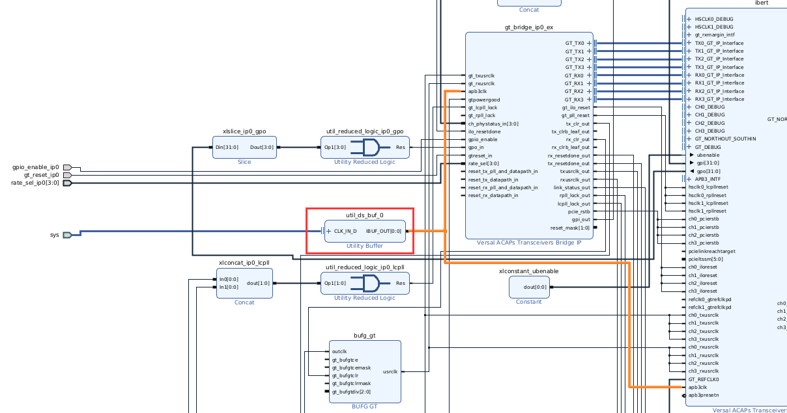

第五章 GTYP收发器误码率测试IBERT实验#
实验VIvado工程为“ibert_test”,目录中还有一个“ibert_ex”，是生成的测试工程。
Vidado软件为我们提供了强大的误码率测试器IBERT，不但可以测试误码率还能测试眼图，给我们使用高速收发器带来很大的便利，本实验做个抛砖引玉，简单介绍IBERT的使用。
5.1 硬件介绍#
使用IBERT测试误码率和眼图必须有个收发环通的硬件，开发板上有2个SFP光纤接口，本实验把2个光接口收发两两连接，形成2个收发环通链路。
5.2 Vivado工程建立#
新建一个工程名为“ibert_test”
在“IP Catalog”中搜索“gt”快速找到“Versal ACAPs Transceivers Wizard”,双击

“Component Name”改为”ibert”，并修改preset为“Aurora 64B/66B”
点击Transceiver Configs Protocol 0，配置发送和接收参数，点击OK

点击Generate
右键“Open IP Example Design…”,选择example工程路径
 

添加buffer连接到apb3clk
添加反向器连接到复位

其他一些信号配置为常数0

删除输出信号

配置sfp_disable为0

将CIPS改成PL Subsystem
约束引脚

生成pdi文件

5.3 下载调试#
插入光模块，然后使用光纤将2个光口对接，连接好JTAG下载线，给开发板上电

使用JTAG下载BIT文件到开发板，可以看到速度接近10.3125Gbps。
选择IBERT，右键，选择“Create Links”
参考原理图，光纤连接到了Quad104的CH0和CH1，选择Link 0为Quad_104 CH_0 TX和CH1 RX对应，Link 1为Quad_104 CH_1 TX和CH0 RX对应

修改配置，码流选择PRBS 31，Loopback配置成None
配置完，可以点击BERT Reset,可以看到Errors都是0，重新开始测试。

选择一个链路，右键“Create Scan…”


默认配置出来的眼图，注意：使用不同的软件版本，测量眼图可能会有差异。